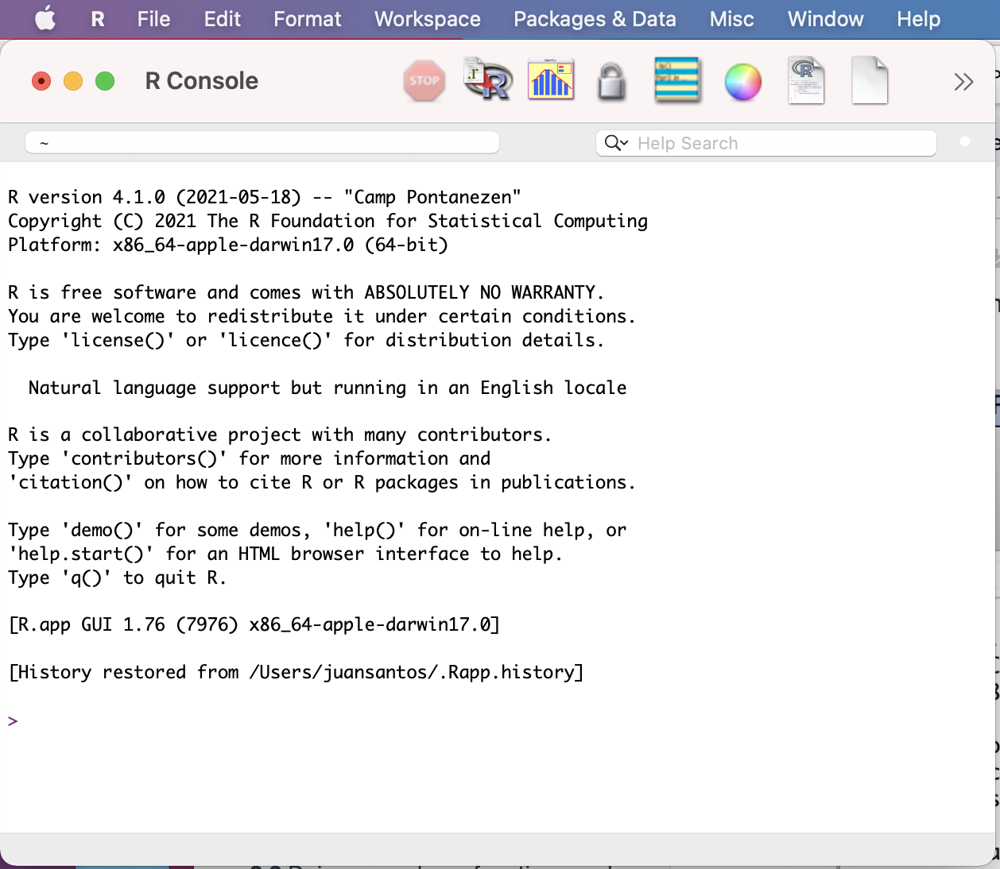

Session 2 – Using R, Installing Packages and Importing/Exporting Data
2.1 Your first session
You will start by entering commands in the console.
1) After clicking on the R icon you should see the R console and the computer will be ready to receive commands

This is the R console in a macOS computer.
2) The blinking command will be next to R prompts which are indicated by >. This basically indicates where you can start typing commands like a excel or a calculator. Let’s try a simple addition:
1 + 2
#[1] 3You can try more complicated calculations like the natural logarithm of 10:
log(10)
#[1] 2.302585The R console gives you a [1] that indicates that the result is a vector of one element or scalar (i.e., 3 or 2.302585). If more that 1, this is called a vector and R will number elements sequentially in a vector. For example, you can ask for an expression for a sequence of number form 1 to 100 by addition of 1 as seq(1:100). This vector will have 100 elements.
seq(1:100)
#[1] 1 2 3 4 5 6 7 8 9 10 11 12 13 14 15 16 17 18 19
#[20] 20 21 22 23 24 25 26 27 28 29 30 31 32 33 34 35 36 37 38
#[39] 39 40 41 42 43 44 45 46 47 48 49 50 51 52 53 54 55 56 57
#[58] 58 59 60 61 62 63 64 65 66 67 68 69 70 71 72 73 74 75 76
#[77] 77 78 79 80 81 82 83 84 85 86 87 88 89 90 91 92 93 94 95
#[96] 96 97 98 99 1003) R provides easy command-line editing tools that will help you to recall previous commands. This help you change parameters in the expression or correct typos in it. For example,
# Same result as before
seq(from = 1, to = 100, by =1)
# [1] 1 2 3 4 5 6 7 8 9 10 11 12 13 14 15 16 17 18 19
# [20] 20 21 22 23 24 25 26 27 28 29 30 31 32 33 34 35 36 37 38
# [39] 39 40 41 42 43 44 45 46 47 48 49 50 51 52 53 54 55 56 57
# [58] 58 59 60 61 62 63 64 65 66 67 68 69 70 71 72 73 74 75 76
# [77] 77 78 79 80 81 82 83 84 85 86 87 88 89 90 91 92 93 94 95
# [96] 96 97 98 99 100You can press ↑ (arrow up) or Ctrl-P to recall previous command and we can change the argument by = to get sequence by addition of 5 instead of 1.
seq(from = 1, to = 100, by =5)
#[1] 1 6 11 16 21 26 31 36 41 46 51 56 61 66 71 76 81 86 91 96Typing errors are easy to introduce and R will let you know about then. For example, I forgot to add the = after to 100. This is not valid, and an error is produced.
seq(from = 1, to 100, by =5)
#Error: unexpected numeric constant in "seq(from = 1, to 100"Now, you can press arrow up to fix the error in the previous command and it can be fixed.
4) Here are some basic functions with numeric vectors. Let’s get create a vector of numbers named my_vector by assigning seven random numbers to it using the arrow <- known as the assign operator (the = also works in similar fashion) and the function c().
my_vector <- c(2,4,1,12,30,5,6)The c() is a base function to combine values into a vector or list.
5) You can read or retrieve the contents of my_vector by typing its name.
my_vector
#[1] 2 4 1 12 30 5 6 6) You can also get the structure of my_vector by using str(). This function provides a compactly display the structure of an arbitrary R object (e.g., a vector). This provides a diagnostic description and summary what is contains.
str(my_vector)
#num [1:7] 2 4 1 12 30 5 6 This indicates that the structure of my_vector is a numeric vector with 7 elements that are numbers.
2.2 Doing some base functions and getting help
1) Let’s create a new my_vector. This will overwrite the previous one.
my_vector <- rnorm(n = 1000, mean = 50, sd = 25)
# I omitted the result because it has 1000 numbers
my_vectorThe function rnorm() will draw n random numbers (in this case 1000) of a normal distribution with mean 50 and standard deviation of 25.
2) We can get the structure of my_vector.
str(my_vector)
#num [1:1000] 50.3 60.3 20.4 44.1 43.8 ...The structure of the my_vector object indicates that is a numeric vector of 1000 numbers.
3) We can confirm that the mean is 50 by using the function mean() and its standard deviation of 25 by using the function sd().
mean(my_vector)
#[1] 50.29036
sd(my_vector)
#[1] 25.05207As you can see in this example, the mean and standard deviation are not exactly 50 and 25, respectively. However, it is very close as these parameters inputted in the rnorm() function.
4) We can get some information about each function used with the following using function ? and help(). You put the function that you want to get information after ? or within the parenthesis of help().
# get help about function 'mean'
?mean
# another way to ask help
help(mean)The functions ? and help() provide a link into a new window with the corresponding manual of that function and how it is use and (in most cases) examples.
This a transcript of the popup window for the help of mean. The name within {} is the library or package that it is from in this case base.
mean {base}
The long name of the mean() function, in this case: Arithmetic Mean.
A description of the mean() function, in this case: "Generic function for the (trimmed) arithmetic mean"
A usage example:
mean(x, ...)
## Default S3 method:
mean(x, trim = 0, na.rm = FALSE, ...)
An explanation of its arguments:
x -- An R object. Currently there are methods for numeric/logical vectors and date, date-time and time
interval objects. Complex vectors are allowed for trim = 0, only.
trim -- the fraction (0 to 0.5) of observations to be trimmed from each end of x before the mean is computed.
Values of trim outside that range are taken as the nearest endpoint.
na.rm -- a logical value indicating whether NA values should be stripped before the computation
proceeds.
... -- further arguments passed to or from other methods.Further information about the function mean() are provided in the same pop up window as value, references and related functions. Finally, examples of how to use mean() are also provided.
x <- c(0:10, 50)
xm <- mean(x)
c(xm, mean(x, trim = 0.10))5) Some basic functions for numeric vectors.
# Arithmetic Mean
mean(my_vector)
# Standard Deviation
sd (my_vector)
# Variance
var (my_vector)
# Median Value
median (my_vector)
# Maximum Value
max (my_vector)
# Minimum Value
min (my_vector)
# Sums values in vector
sum(my_vector)
# Provides the number of elements in the vector
length(my_vector)
# Round numbers to of elements in the vector to number of digits (in this case to two decimal points)
round(3.1415, digits = 2)
# Absolute value
abs(my_vector)
# Square root
sqrt(my_vector)
# Natural logarithm
log(my_vector)
# Common (base 10) logarithm
log10(my_vector)6) You can print what is in a vector (or object) or return the result of calculation, you just can type its name on the console and get what is contained on it. You can also use the function print().
1:10
#[1] 1 2 3 4 5 6 7 8 9 10
my_numbers <- 1:10
my_numbers
#[1] 1 2 3 4 5 6 7 8 9 10
print(my_numbers)
#[1] 1 2 3 4 5 6 7 8 9 107) We can construct a character vector my_names with text (i.e., string vector) that contains letter or numbers that are treated as text (i.e., not quantities).
my_names <- c("juan", "c", "santos", 123)
my_names
#[1] "juan" "c" "santos" "123"
print(my_names)
#[1] "juan" "c" "santos" "123"You can revise its structure with str(). You will notice that the numbers are within quotations.
str(my_names)
#chr [1:4] "juan" "c" "santos" "123"8) Some more complex R data structures like matrices, lists or data.frames can also be printed and visualized using print().
my_matrix <- matrix(c(1,2,3,4,5,6), 3,2)
print(my_matrix)
# [,1] [,2]
#[1,] 1 4
#[2,] 2 5
#[3,] 3 6In this case, we are printing the object my_matrix that has the numbers in the sequence from 1 to 6 in 3 rows and 2 columns.
9) However, print() can only return one object at a time.
print(my_numbers, my_names, my_matrix)
#Error in print.default(my_numbers, my_names, my_matrix) :
# invalid 'digits' argument
#In addition: Warning message:
#In print.default(my_numbers, my_names, my_matrix) :
# NAs introduced by coercionIn this case cannot print the three objects (i.e., my_numbers, my_names, my_matrix) at the same time.
10) We can use the function like cat() that allows you to concatenate and print several objects.
cat(my_numbers,my_names)
#1 2 3 4 5 6 7 8 9 10 juan c santos 12311) One common use of the function cat() is to provide users with screen reports (i.e., print on the screen) on the status of a process that the computer is doing while running iterations or loops that are recursive and time consuming.
cat("\nPrint the two vectors my_numbers and my_names separed by *** ",
my_numbers,
" *** ",
my_names)
#Print the two vectors my_numbers and my_names separed by *** 1 2 3 4 5 6 7 8 9 10 *** juan c santos 12312) You can also list all object “in memory” that is to display the names of objects in your
workspace using function ls().
ls()
#[1] "my_matrix" "my_names" "my_numbers" "my_vector" You can also list objects and their structure with the function ls.str().
ls.str()
#my_matrix : num [1:3, 1:2] 1 2 3 4 5 6
#my_names : chr [1:3] "juan" "c" "santos" "123"
#my_numbers : int [1:10] 1 2 3 4 5 6 7 8 9 10
#my_vector : num [1:1000] 50.3 60.3 20.4 44.1 43.8 ... 13) You can also remove objects from your workspace with the function rm().
my_names
#[1] "juan" "c" "santos" "123"
rm("my_names")
my_names
#Error: object 'my_names' not found
#In this case the object "my_names" has been removed from the workspace2.3 Functions between two or more vectors
1) You can compare the elements of two vector using ** Set Operations **. These vectors could be numeric and character.
# we create two vector
my_vector_A <- c(1,3,4,5,6,7,9,10)
my_vector_B <- c(1,3,5,7,9)
# get union of these two vectors (i.e., all values, not repeated, in these two vectors)
union(my_vector_A,my_vector_B)
#[1] 1 3 4 5 6 7 9 10
# get intersect of these two vectors (i.e., values in common between both vectors)
intersect(my_vector_A,my_vector_B)
#[1] 1 3 5 7 9
# get values unique to one of the vectors.
setdiff(my_vector_A,my_vector_B)# unique to my_vector_A
#[1] 4 6 10
setdiff(my_vector_B,my_vector_A)# unique to my_vector_B
#numeric(0) -- in this case there are not unique elements for my_vector_B
# Are the elements of these two vectors identical
setequal(my_vector_A,my_vector_B)
#[1] FALSE
# Is an element present in a vector?
is.element(6, my_vector_A) # 6 is present in my_vector_A
#[1] TRUE
is.element(6, my_vector_B) # 6 is NOT present in my_vector_B
#[1] FALSE2) Some other basic functions between two numeric vectors.
my_vector2 <- c(1:1000)
# get the correlation between two vectors
cor(my_vector, my_vector2) # Correlation between two numeric vectors
#[1] -0.001297859
# get the covariance between two vectors
cov(my_vector, my_vector2) # Covariance between two numeric vectors
#[1] -9.3906922.4 About R-packages
What are R packages?
A formal definition is that a R package is collection of code, scripts of functions, datasets, add-ons, and plug-ins that extend the base R statistical programming language and might include code written in other languages like C, Python, Fortran, etc. In most cases, packages contain R-code scripts, preformatted data, and extensive function documentation for help in a format that is standardized (i.e., easy to read and similar across packages). The large number and diversity of R-packages plus their easy installation have favored the widespread use of R in data science and bioinformatics.
How are R packages loaded in the R environment?
R-packages need to be installed first (see below) before they can be loaded and used in the R environment. Once a R-package is installed, it can be called and loaded using the function library(). The packages are stored under a library directory called in the R environment by library(). However, some R-packages have add-ons or depended on other packages which need to be installed (R usually will determine and try to install the required packages). However, some R-packages might require other software that is not R-based to be able to run and should preinstalled beforehand. For this workshop, we will install several packages based on data analyses, graphs and other computational needs.
NOTE: you DO NOT need to install again and again the same R-package every time that you start a new session in R. Once you have installed a R-package, it stays in library folder and you just need to call it with library().
Before you install an R package
One of the strengths of the R environment is the growing set of packages that can be installed and loaded to do specific analyses, plots, calculations and data management within this environment. To date (01/23/24), a total of CRAN repository features a total of 20313 available packages written by the R community. To find all available packages, you can check the left menu under Software and click on Packages.
These are usually two list based on (1) sorted by date of publication and (2) sorted by name.
Some of the few disadvantages of such diversity of R-packages is that many of these packages might overlap in their functions, their function names, vary in the difficulty of their implementations, bugs and inherent errors in the scripts/functions (i.e., there is no warranty that they will work as described, the user must evaluate the output). Given the open nature of these R-packages, the user can access the source code and modify, improve, adapt, combine, repurpose, etc.
Some packages eventually become obsolete and disappear from CRAN if they are not maintained. However, those can be found in CRAN archives and might require a more convoluted installation (described below).
2.5 CRAN Task Views – Expert opinion on useful packages
Before you install a package, you could check which are useful to your intended goal. In most cases, you will already know what you want. However, if you are unsure, you could check the suggestions by R community posted in the CRAN Task Views. Here are some of the communities relevant for our workshop and those based on our student background:
CRAN Task View: Clinical Trial Design
CRAN Task View: Phylogenetics, Especially Comparative Methods
CRAN Task View: Teaching Statistics
CRAN Task View: Design of Experiments
CRAN Task View: Bayesian Inference
CRAN Task View: Analysis of Pharmacokinetic Data
CRAN Task View: Genomics, Proteomics, Metabolomics, Transcriptomics, and Other Omics
2.6 Installing packages
1) Check what packages are preloaded or were loaded in the R environment before installing new one using the function search().
search()
#[1] ".GlobalEnv" "tools:RGUI" "package:stats" "package:graphics" "package:grDevices" "package:utils"
#[7] "package:datasets" "package:methods" "Autoloads" "package:base" 2) To install a package that you want and you can use install.packages() as indicated below.
install.packages("reshape2")You will be prompted to select a CRAN mirror. Usually take the one geographically close like: USA (OH) [https] or the cloud: 0-Cloud [http]. Once you have accepted it will proceed to install. Sometimes, some other packages are required and R will install those during the process. In some rare cases, you might need to install those on your own (i.e., not authomatic installation)
install.packages("reshape2")
#--- Please select a CRAN mirror for use in this session ---
#trying URL 'https://cloud.r-project.org/bin/macosx/el-capitan/contrib/3.6/reshape2_1.4.4.tgz'
#Content type 'application/x-gzip' length 333148 bytes (325 KB)
#==================================================
#downloaded 325 KB
#The downloaded binary packages are in
# /var/folders/vx/rjmrkyz566zf4khl9xjhkqyr0000gp/T//RtmpwxVTvt/downloaded_packages3) For PC users, you might need to define a folder (R library) where you R-packages will be kept.
4) To load a R-package already installed, call for its name using library().
library(reshape)if the library is successfully loaded, you will get NO RESPONSE in most cases as above. Some packages will report some information about the package being loaded successfully.
5) If errors occurs and the selected R-package was not installed, R will let know that there is a problem in some form.
## if the package name is misspelled or does not exist in CRAN then:
install.packages("my_madeup_package")
# Warning message:
# package ‘my_madeup_package’ is not available (for R version 3.6.2) 6) If did not installed the R-package beforehand, R will also let you know that the package is not installed in your library.
library(my_madeup_package)
# Error in library(my_madeup_package) :
# there is no package called ‘my_madeup_package’7) To install packages from older versions or no longer maintained in CRAN, you need to install this R-package ‘devtools’.
install.packages("devtools")
library(devtools)8) For example, we will install an older version (i.e., ver 1.4.3) of the R-package ‘FlexParamCurve’, which is a statistics tool to fit complex parametric curves.
install_version("FlexParamCurve", version = "1.4.3", repos = "http://cran.us.r-project.org")
#Downloading package from url: http://cran.us.r-project.org/src/contrib/Archive/FlexParamCurve/FlexParamCurve_1.4-3.tar.gz
#* installing *source* package ‘FlexParamCurve’ ...
#** package ‘FlexParamCurve’ successfully unpacked and MD5 sums checked
#** using staged installation
#** R
#** data
#** byte-compile and prepare package for lazy loading
#** help
#*** installing help indices
#** building package indices
#** testing if installed package can be loaded from temporary location
#** testing if installed package can be loaded from final location
#** testing if installed package keeps a record of temporary installation path
#* DONE (FlexParamCurve)9) You can check the version of the R-packages that just installed like ‘devtools’ or ‘FlexParamCurve’ with function packageVersion().
library(devtools)
packageVersion("devtools")
#[1] ‘2.4.5’
library(FlexParamCurve)
#Loading required package: nlme
packageVersion("FlexParamCurve")
#[1] ‘1.4.3’This information is useful if you what to know the current version of a R-package that has been loaded after using ‘library()’.
10) More detailed information about any R-package can be obtained with the function ‘packageDescription()’.
packageDescription("devtools")
#Package: devtools
#Title: Tools to Make Developing R Packages Easier
#Version: 2.4.5
#Authors@R: c( person("Hadley", "Wickham", role = "aut"), person("Jim", "Hester", role = "aut"), person("Winston", "Chang", role = "aut"), person("Jennifer", "Bryan",
# , "jenny@rstudio.com", role = c("aut", "cre"), comment = c(ORCID = "0000-0002-6983-2759")), person("RStudio", role = c("cph", "fnd")) )
#Description: Collection of package development tools.
#License: MIT + file LICENSE
#URL: https://devtools.r-lib.org/, https://github.com/r-lib/devtools
#BugReports: https://github.com/r-lib/devtools/issues
#Depends: R (>= 3.0.2), usethis (>= 2.1.6)
#Imports: cli (>= 3.3.0), desc (>= 1.4.1), ellipsis (>= 0.3.2), fs (>= 1.5.2), lifecycle (>= 1.0.1), memoise (>= 2.0.1), miniUI (>= 0.1.1.1), pkgbuild (>= 1.3.1),
# pkgdown (>= 2.0.6), pkgload (>= 1.3.0), profvis (>= 0.3.7), rcmdcheck (>= 1.4.0), remotes (>= 2.4.2), rlang (>= 1.0.4), roxygen2 (>= 7.2.1),
# rversions (>= 2.1.1), sessioninfo (>= 1.2.2), stats, testthat (>= 3.1.5), tools, urlchecker (>= 1.0.1), utils, withr (>= 2.5.0)
#Suggests: BiocManager (>= 1.30.18), callr (>= 3.7.1), covr (>= 3.5.1), curl (>= 4.3.2), digest (>= 0.6.29), DT (>= 0.23), foghorn (>= 1.4.2), gh (>= 1.3.0), gmailr
# (>= 1.0.1), httr (>= 1.4.3), knitr (>= 1.39), lintr (>= 3.0.0), MASS, mockery (>= 0.4.3), pingr (>= 2.0.1), rhub (>= 1.1.1), rmarkdown (>= 2.14),
# rstudioapi (>= 0.13), spelling (>= 2.2)
#VignetteBuilder: knitr
#Config/Needs/website: tidyverse/tidytemplate
#Encoding: UTF-8
#Language: en-US
#RoxygenNote: 7.2.1
#Config/testthat/edition: 3
#NeedsCompilation: no
#Packaged: 2022-10-11 16:13:16 UTC; jenny
#Author: Hadley Wickham [aut], Jim Hester [aut], Winston Chang [aut], Jennifer Bryan [aut, cre] (<https://orcid.org/0000-0002-6983-2759>), RStudio [cph, fnd]
#Maintainer: Jennifer Bryan <jenny@rstudio.com>
#Repository: CRAN
#Date/Publication: 2022-10-11 17:12:36 UTC
#Built: R 4.1.2; ; 2022-10-12 11:12:20 UTC; unix
#
#-- File: /Library/Frameworks/R.framework/Versions/4.1/Resources/library/devtools/Meta/package.rds 11) You can also get information about a R-package for citation in an article or report using the function citation().
library(devtools)
citation("devtools")
#To cite package ‘devtools’ in publications use:
#
# Hadley Wickham, Jim Hester, Winston Chang and Jennifer Bryan (2022). devtools: Tools to Make Developing R Packages Easier. R package version 2.4.5.
# https://CRAN.R-project.org/package=devtools
#
#A BibTeX entry for LaTeX users is
#
# @Manual{,
# title = {devtools: Tools to Make Developing R Packages Easier},
# author = {Hadley Wickham and Jim Hester and Winston Chang and Jennifer Bryan},
# year = {2022},
# note = {R package version 2.4.5},
# url = {https://CRAN.R-project.org/package=devtools},
# }
library(FlexParamCurve)
#Loading required package: nlme
citation("FlexParamCurve")
#To cite package ‘FlexParamCurve’ in publications use:
#
# Stephen Oswald (2012). FlexParamCurve: Tools to Fit Flexible Parametric Curves. R package version 1.4-3. https://CRAN.R-project.org/package=FlexParamCurve
#
#A BibTeX entry for LaTeX users is
#
# @Manual{,
# title = {FlexParamCurve: Tools to Fit Flexible Parametric Curves},
# author = {Stephen Oswald},
# year = {2012},
# note = {R package version 1.4-3},
# url = {https://CRAN.R-project.org/package=FlexParamCurve},
# }
#ATTENTION: This citation information has been auto-generated from the package DESCRIPTION file and may need manual editing, see ‘help("citation")’.12) Most genetic, genomic, transcriptomic R-packages are Bioconductor. To date (1/23/24), this archive has a total of 3649 packages available packages. To install packages present on this archive, you need to follow the next instructions.
## test if 'BiocManager' is installed
if (!requireNamespace("BiocManager", quietly = TRUE)) {install.packages("BiocManager")}Now, we can use the function BiocManager::install("my_desired_bioconductor_package"). For example, we can install an excellent sequence aligner that is the Bioconductor R-package DECIPHER.
BiocManager::install("DECIPHER")Note that R will ask you to update your older packages, in most cases you decline (i.e., type ‘n’).
Update all/some/none? [a/s/n]: n13) Some experimental or not yet released R-packages are sometimes stored in the developers’ repositories like GitHub (like this gitbook). This website has become one of the most popular store websites for free software for a diversity of fields. To install such packages you use again ‘devtools’
library(devtools)
# install_github("github_handler/package_name"
# installing httr for web API (application programming interface) like donwload of data from the web
install_github("r-lib/httr")